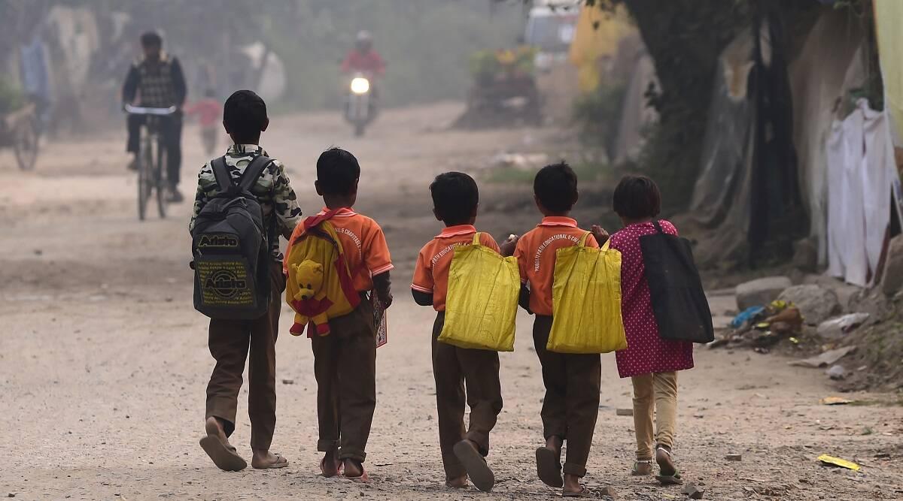

Education is the
fundamental right
Help us reducing dropout rates


The Backward and the lower caste students are still deprived of education in this modern world especially in India
HOW LONG DOES IT TAKE
TO SEE A CHANGE
More than a dozen states, including Bihar,
West Bengal, Gujarat and Tripura, have a
school dropout rate higher than the
national average
of 14.6 per cent
Education is the
fundamental right
Help us reducing dropout rates